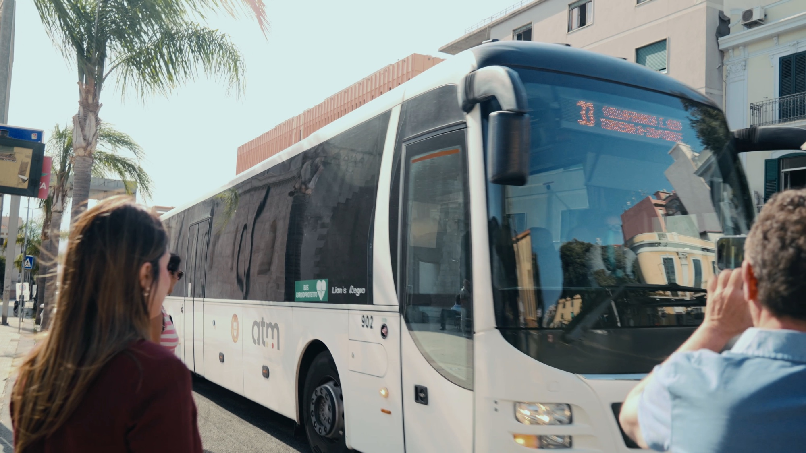
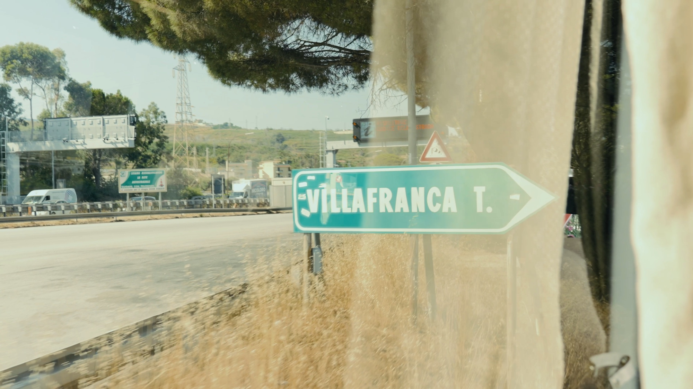
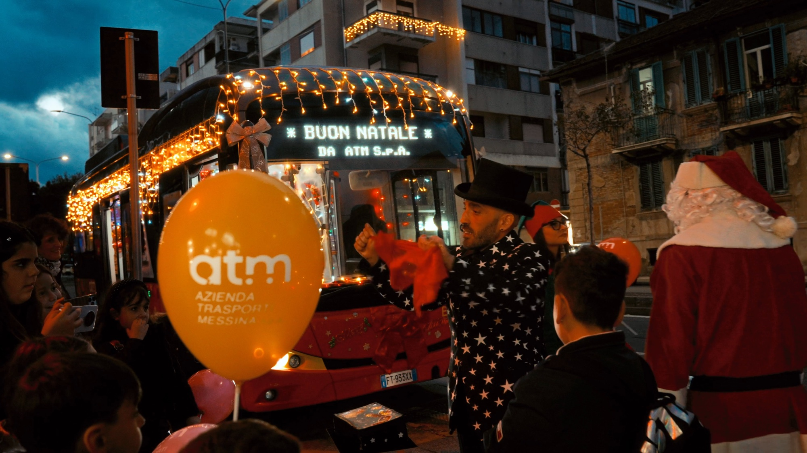
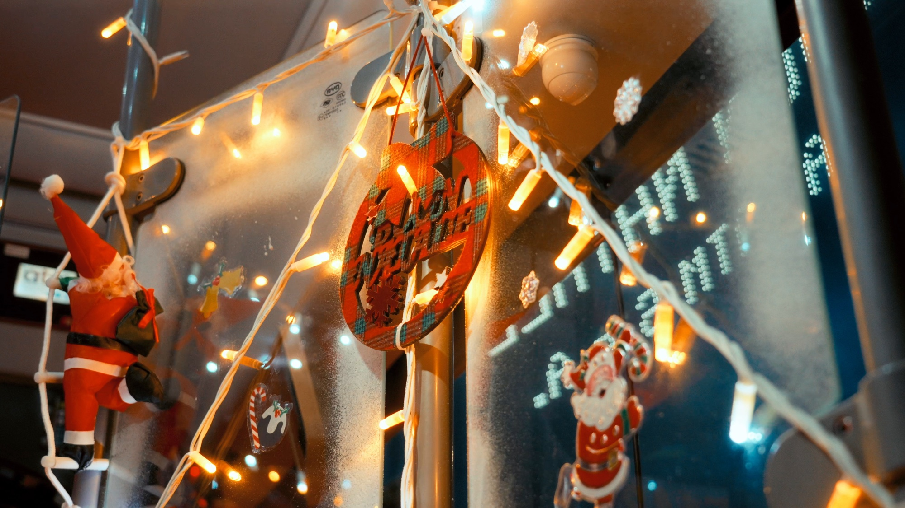
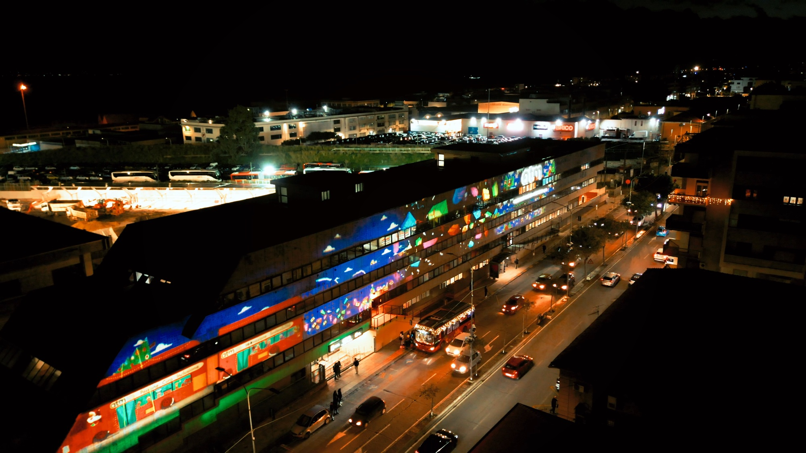
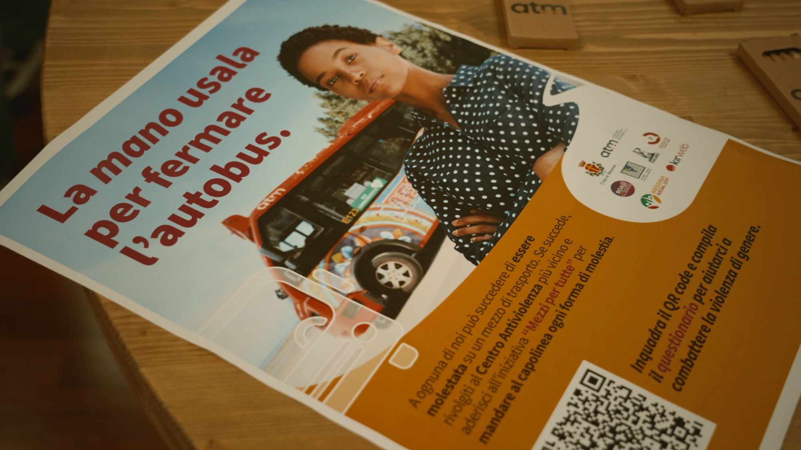
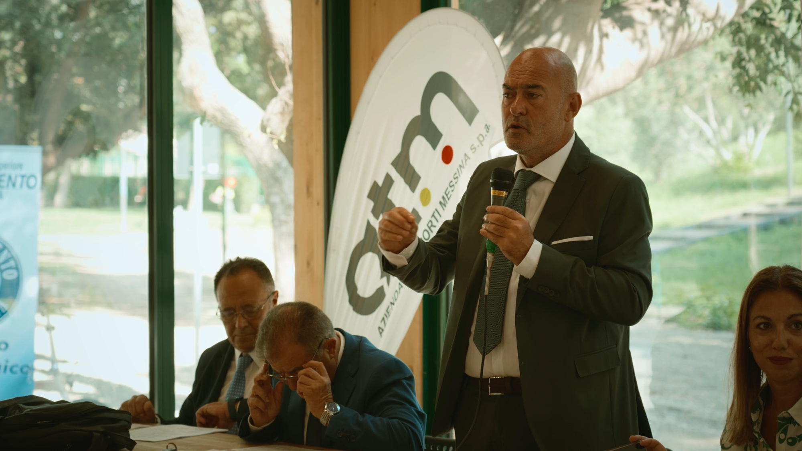
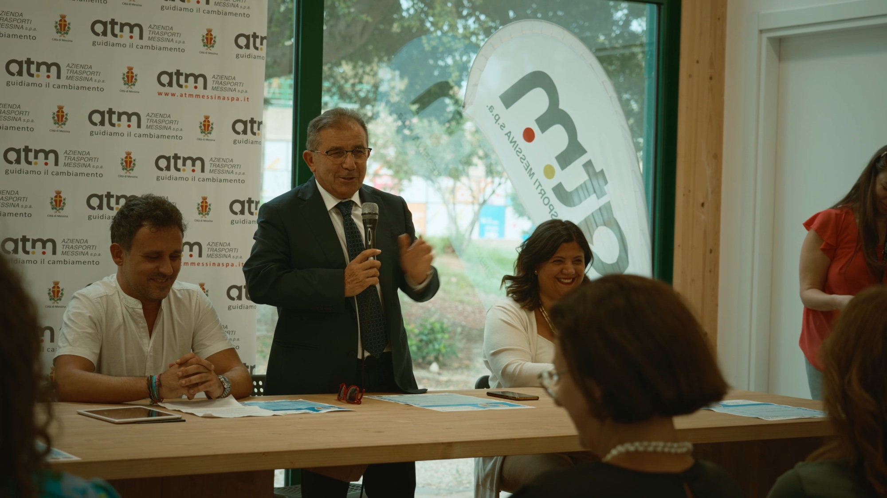
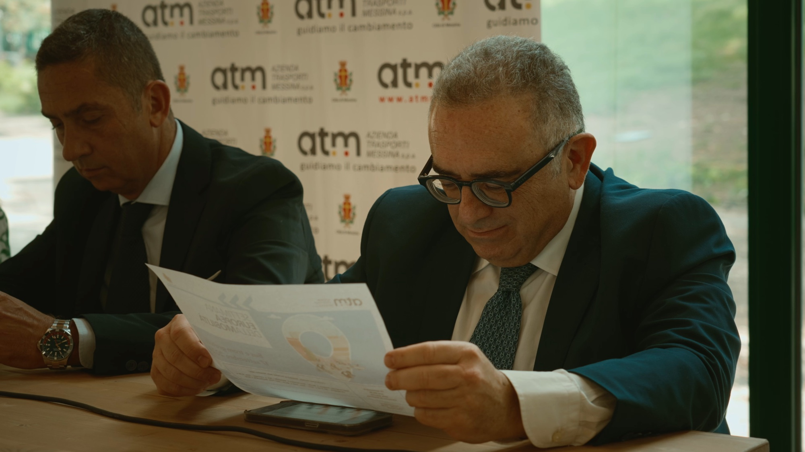
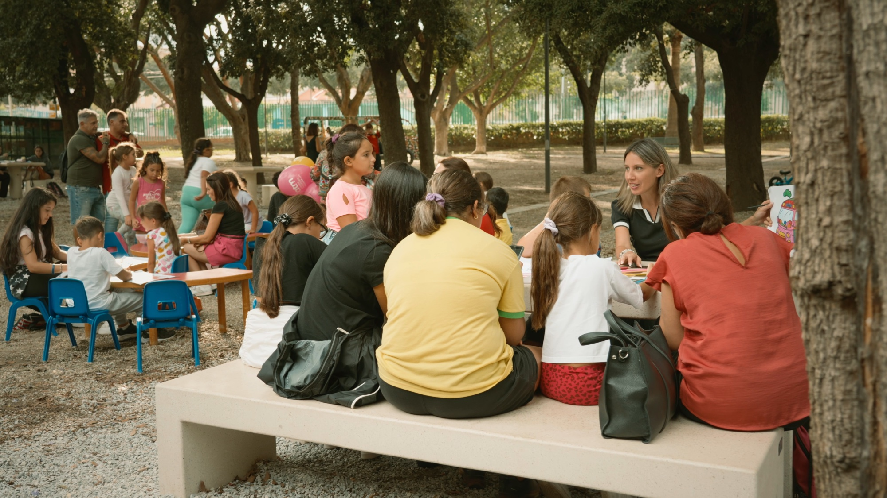

Client · Institutional
Video and photography for the public transport company of Messina — service, public events and social campaigns, shot across the city and its routes.
← Back to VideographyATM Messina runs public transport in the city — buses and the tram line that follows the coast road through Messina, out along the routes toward Villafranca Tirrena. The brief was institutional communication rather than advertising in the commercial sense: service information, public events, and social campaigns aimed at the people who use the network every day.
I worked as videomaker on this project, producing both the video and the photography. Direction, strategy and the overall production decisions were handled by others — my responsibility was capturing the material and cutting it into pieces the company could publish.
That distinction matters on institutional work. The message, the campaign and the public-communication objectives came from the organisation; what I brought was the shooting and the edit.
Four pieces, each with a different job to do — a public mobility festival, the service and its routes, the Christmas campaign, and an institutional public event.
Buses and the tram in service, drivers and staff, infrastructure along the line, public events, and the printed material for a social campaign on stopping a bus safely.










The relationship did not continue. Changes in the municipal administration and in the participated-company structure around it closed the work off — not a reflection of the material itself, but the ordinary reality of producing for a publicly owned organisation.
For public bodies and companies that need service, events and campaigns documented clearly.